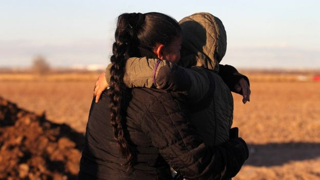

Welcome to BBC.comTuesday, 19 June
News
-
A series of White House contradictions on migrants
It's our new policy, it's not our policy. It's a deterrent, it's not a deterrent. What's going on?
US & Canada -

Psychological impact on separated children
Experts say there is no downplaying the trauma that taking a child away from a parent causes.
US & Canada -
The troubled talent of murdered rap star XXXTentacion
The controversial rapper has been shot dead in Florida at the age of 20.
Entertainment & Arts
Sport
-

Watch: Russia 3-1 Egypt - Salah scores penalty after VAR
Russia play Egypt at Krestovsky Stadium, St Petersburg in the second round of World Cup Group A matches - watch, listen and follow live text commentary.
Football -
Australia sliding towards defeat after England post record total - clips, TMS & text
Australia lose wickets regularly as they attempt to chase down England's record-breaking ODI total of 481-6 at Trent Bridge.
Cricket -
Controversial goal as Senegal beat Poland
Senegal beat Poland in a game of few chances to claim the first win by an African team at this World Cup.
Football


London Weather Edit


Editor’s Picks
-
The end to a French cheese tradition?
One of France’s favourite cheeses may be disappearing – for good
Travel -
-
Will we stop speaking and just text?
The young often text more than make phone calls, so is speech itself doomed?
Culture -
-
Unlocking the hidden life of Frida Kahlo
What her style and possessions reveal about the icon
Designed -
-
Perfect vegan BBQ recipes
A plant-based feast with summery salads and delicious meat-free mains
Good food


Featured video


-
BBC America
Two weeks left to binge 'Killing Eve'
Watch the entire first season on BBCAmerica.com or the BBCA app
-
BBC World News
Artificial intelligence... for animals
University researchers are using deep neural networks to study wildlife and enhance conservation.
-
BritBox
We invite you to try BritBox
The streaming service from the BBC and ITV is the biggest collection of British TV in one place.


More BBC channels
More from around the BBC
-
Bakewell pudding 'lost in space'
Tracking devices stopped working as the pudding reached 52,500ft, attached to a high altitude...
UK -
No, that's not a celebrity
A Labour MP had his photo taken with Clean Bandit but he'd unfortunately posed with the wrong people
Newsbeat -
Medicinal cannabis use to be reviewed
Families of epileptic children welcomed the move, which does not change rules on recreational use.
UK -
Asos to ban silk, cashmere and mohair
The fashion retailer updates its animal welfare policy to say its site will be free of the materials...
Newsbeat -
Inside the North Korean place that ‘doesn’t exist’
One US citizen warns of the consequences of a visit to a forbidden area in North Korea.
Stories -
What's it like to ride a rocket to Mars?
European engineers shake their Mars rover to see that it can survive the violence of a rocket...
Science & Environment -
Emotional eating 'learned by children'
Genes are significant in most eating behaviours but not emotional under- or overeating, say experts.
Health


From Our Correspondents
-
What is Donald Trump's family-separation endgame?
-
A battle to save Indonesia's orangutans
-
The NHS, taxes and that 'Brexit dividend'
-
Gaming becomes the latest addiction
-
'England aren't in a rut - they are in a trench'
-
Why landlocked Ethiopia wants to launch a navy
-
EU's Med migrant crisis: Just a mess or cynical politics?
-
Could Brexit concession intensify Tory warfare?


BBC in other languages
More Languages
- Arabic عربي
- Azeri AZƏRBAYCAN
- Bangla বাংলা
- Burmese မြန်မာ
- Chinese 中文网
- French AFRIQUE
- Hausa HAUSA
- Hindi हिन्दी
- Indonesian INDONESIA
- Japanese 日本語
- Kinyarwanda GAHUZA
- Kirundi KIRUNDI
- Kyrgyz Кыргыз
- Marathi मराठी
- Nepali नेपाली
- Pashto پښتو
- Persian فارسی
- Portuguese BRASIL
- Russian НА РУССКОМ
- Sinhala සිංහල
- Somali SOMALI
- Spanish MUNDO
- Swahili SWAHILI
- Tamil தமிழ்
- Turkish TÜRKÇE
- Ukrainian УКРАЇНСЬКA
- Urdu اردو
- Uzbek O'ZBEK
- Vietnamese TIẾNG VIỆT